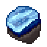
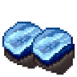
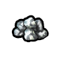
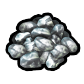
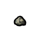
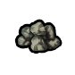
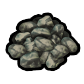
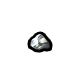

中世纪本地贵重级·中世纪·蓝宝石RKGem_Sapphire
贵重品·不作材质宝石·收藏(未加工贵重品) —— 建造/打造清单里不会拿它当材质(覆盖 0 件);当前被 2 条配方当原料消耗

生效·aHSK工业科研大修
生效·bHSK工业科研大修生效·cHSK工业科研大修Things/Item/Resource/Sapphire StackCount (60,109,158)被2条配方消耗
护甲 1.24/0.62/0.75 利钝 —/1.50 价值 13 质量 0.60 Bulk 0.60
stuff RK_Gems
HSK PRS
产自 —(无产出配方:矿石开采 / 基础掉落 / 商人购买)
源 HSK工业科研大修
Things_RKGem.xml
中世纪按消耗它的配方研究档HSK原版本地补丁×1上游补丁×6贵重级·中世纪·白银Silver
贵重品·不作材质宝石·收藏(未加工贵重品) —— 建造/打造清单里不会拿它当材质(覆盖 0 件);当前被 2 条配方当原料消耗
① 起点 · Core 的 Defs 写 Things/Item/Ores/Silver
 aCore_SK
aCore_SK
bCore_SK
cCore_SK② Core_SK_CoreModule 换成 Things/Item/Ores/Silver (180,173,150) ← Items_Resource_Ore.xml

aCore_SK
bCore_SK
cCore_SK④ 生效(终态) Things/Item/Ores/Silver

aCore_SK bCore_SK
bCore_SK cCore_SK
cCore_SKThings/Item/Ores/Silver StackCount (180,173,150)被2条配方消耗贴图链 4 段
护甲 —/—/— 利钝 —/— 价值 1 质量 0.01 Bulk 0.01
stuff Matty
HSK PRS
产自 Convert to silver ore(核合成转化器/Transformation of matter II)
源 Core_SK + 游戏本体
Items_Resource_Ore.xml ; Items_Resource_Stuff.xml